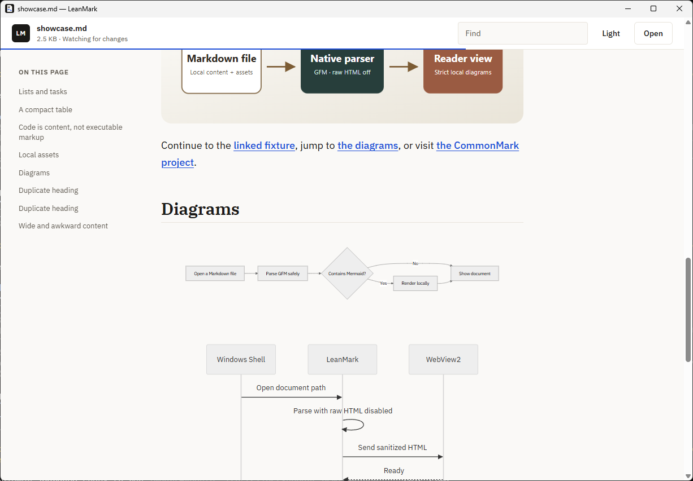

A focused Markdown viewer for desktop
Open the README,
not the IDE.
Read GitHub-flavored Markdown and Mermaid diagrams offline in thin native hosts for Windows, Linux, and macOS.
Signing status: Windows is unsigned. The macOS preview is ad-hoc signed but not notarized. Platform notes accompany every artifact.

Measured release facts
- 3
- Native desktop platforms
- ~74 ms
- Windows baseline: native window visible
- ~97 MiB
- Windows baseline: full-process peak private memory
- MIT
- Free to use, inspect, and improve
The reading workflow
A document opens as a document.
LeanMark turns a Markdown file into a calm reading surface without project indexing, editor panes, extensions, or workspace management.
- CommonMark plus GFM tables, tasks, autolinks, and strikethrough
- Automatic outline, find, zoom, print, themes, and reading progress
- Relative local images and Markdown links
- Live refresh after the file changes on disk
# Release path
The viewer stays focused on
the current document.
```mermaid
flowchart LR
File --> Parse --> Read
```Offline diagrams
Mermaid stays with the document.
The release includes its Mermaid renderer. Diagrams work without an active connection, and the library is loaded only when the document contains a Mermaid fence.
LeanMark is explicit about its architecture: one portable C++ parser feeds native Win32, GTK, and AppKit hosts. Each host uses the operating system web runtime for selectable text, printing, images, and diagrams.
Measured, not magical
Small package. Honest runtime cost.
System web runtimes stay outside LeanMark's packages, but renderer, GPU, and utility processes still use memory. Package size is not the same as total footprint.
The published figures below are a Windows 11/WebView2 baseline. Hardware, system state, runtime version, and document complexity affect results; Linux and macOS measurements are not inferred.
Read the measurement method- 4.17 MiB
- Windows staged application payload
- 74.15 ms
- Windows native window visible, simple document
- 96.79 MiB
- Windows peak private memory, full app tree
Practical guards
Local Markdown is treated as untrusted input.
LeanMark narrows what a document can do, then verifies those boundaries against hostile fixtures.
Read the security policy- Raw HTML disabledMD4C renders Markdown without activating embedded HTML.
- Strict local page policyA Content Security Policy limits scripts and resources.
- Remote content blockedRemote images, downloads, popups, and permissions are denied.
- External links leave the readerHTTP, HTTPS, and mail links go to the operating-system handler only after a click.
Platform releases
Native packages for three desktops.
GitHub Releases provides a Windows x64 ZIP, an Ubuntu 24.04 / Debian-compatible x86-64 package, and one Universal 2 macOS preview for Intel and Apple silicon.
Windows x64 · Ubuntu 24.04 / Debian-compatible x86-64 · macOS Universal 2 preview
-
01
Windows x64
Portable ZIP with optional per-user Default Apps integration.
-
02
Linux x86-64
Debian package with declared GTK 4 and WebKitGTK 6.0 dependencies.
-
03
macOS universal preview
One AppKit bundle for Intel and Apple silicon, ad-hoc signed and not notarized.
Built in public
Useful tools get better through real documents.
LeanMark is early, public, and MIT licensed. Compatibility reports based on real, non-private Markdown documents are welcome, especially documents containing Mermaid diagrams.